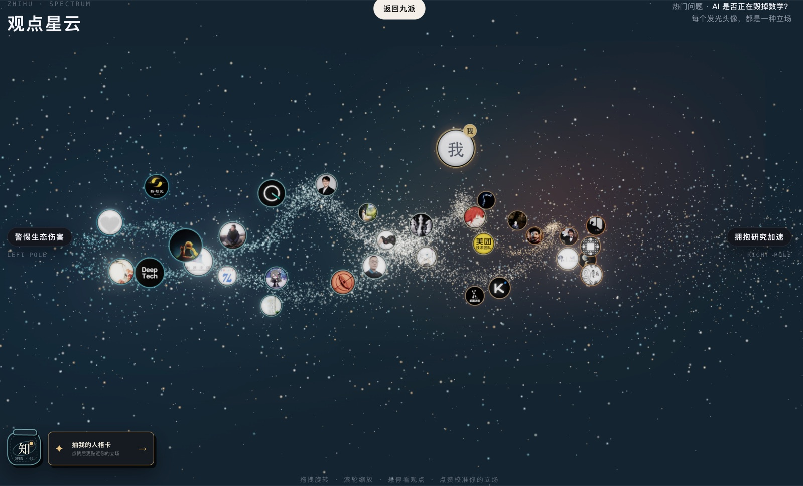
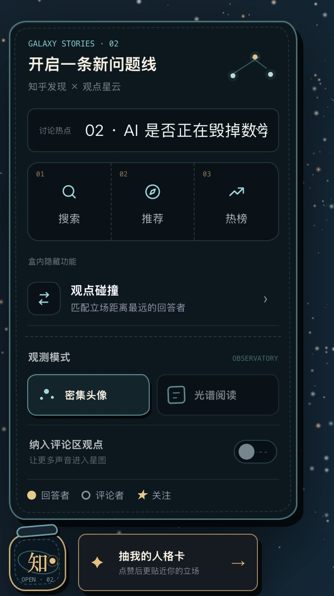
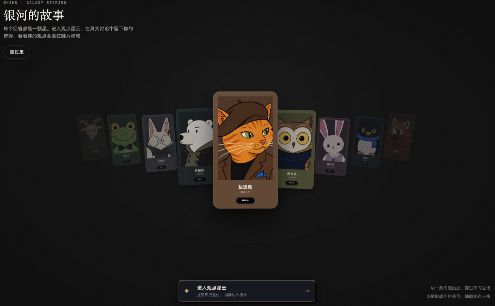
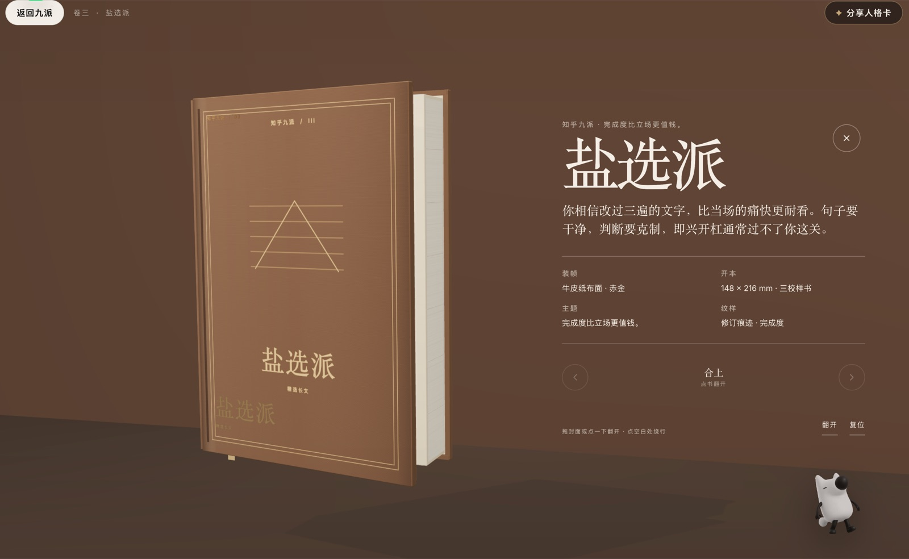

ZHIHU HACKATHON 2026 · 产品手册
思想银河
SOULAR · IDEAS IN ORBIT
把一场讨论，变成一张可以漫游的观点地图。
参赛赛道 · 灵魂匹配局：社区连接与兴趣社交
目录
产品简介
思想银河（Soular）是知乎黑客松 2026 参赛作品，属于"灵魂匹配局：社区连接与兴趣社交"赛道。 产品通过 AI 将信息密集的知乎讨论转化为可探索的 3D 观点星图——每颗星对应一条真实回答， 位置代表立场，距离呈现分歧——帮助用户理解讨论全貌、定位自己的坐标、发现同频或互补的人。
一个知乎热门问题下可能有数百条回答。线性信息流适合逐篇阅读，却很难看清整场讨论的形状： 主要立场分布在哪里？彼此距离有多远？自己认同的人和相反观点的人分别是谁？
思想银河把回答放到 -1..1 的连续光谱上。每个主题都有自己的左右两极和中间语义， 中间立场、复杂观点和不确定性都可以保留下来。星云既是一张讨论地图，也是理解他人、定位自己和发现关系的入口。

核心体验流程
一次完整的产品体验从登录到匹配，共分为六个环节：
- 登录知乎——完成 OAuth 授权后进入产品，用公开兴趣信号校准个人星谱。
- 进入讨论——选择已发布的热点星云，从全局俯瞰立场分布。
- 阅读观点——悬停查看核心主张，筛选立场，按需回到知乎原文核验上下文。
- 留下坐标——点赞认可的回答，个人星位随选择实时移动。
- 抽取人格——将探索沉淀为观点人格卡和可交互的 3D 人格书。
- 朋友对照——分享本题人格与星位，让朋友独立表态后再查看双方距离。
从首页进入漂浮问题场，选择已发布问题并在中央确认。点击生成后，静态快照在同一星空中经过 汇聚、分离、成带和头像浮现四个阶段，再进入可探索星云。 生成动画不调用任何知乎回答或 AI 接口，确保体验稳定。


观点星云
把一场讨论展开为可探索的三维光谱
思想银河的核心交互是一幅由 Three.js 渲染的 3D 观点星云。每颗星对应一条真实回答， 其空间位置由回答在光谱上的立场决定：左右两极代表对立观点， 纵向离轴度代表视角特异程度，颜色和亮度代表点赞热度。
自由探索
旋转、缩放、悬停查看回答摘要，如同在银河中漫游。
光谱筛选
按立场区间筛选，只看你最关心的那一段。
站内搜索
按昵称、人格或观点正文搜索当前快照。
阅读流
沉浸式连续阅读已筛选的回答摘要。
生成动画经过精细设计：读取坐标 → 两侧汇入 → 建立立场轴 → 展开光谱 → 点亮回答者。 背景与星云分层渐显，12 秒内完成从混沌到有序的视觉叙事。
星云渲染管线：
立场数据 (JSON 快照)
↓
Three.js 粒子系统 (点精灵 + 头像精灵)
↓
Bloom 后期 (UnrealBloomPass) → 光晕增强
↓
LOD 缩放 × 呼吸动画 → 平滑过渡
↓
交互层 (旋转/缩放/点击气泡卡)
星云支持桌面端和移动端（390 px 以上）的完整适配。移动端采用底部观测站模式， 触控区域不小于 44 px，保留完整的旋转、缩放和阅读能力。
坐标映射算法
从一段文本到一颗星光坐标的完整旅程
一条回答在系统里完成四次转换：从文本变成结构，从结构变成坐标， 从坐标帮助用户找到自己，再从个人位置生成新的关系。 其中，文本到坐标的映射是整个可视化的核心——我们把它拆成三步：定序、赋形、松弛。
4.1 定序——经验分位映射
真实回答往往集中在少数立场区间。如果直接使用原始分数摆放，几十个头像会叠成一团。 我们的处理方式：先按真实立场排序，再把所有回答从最左端到最右端等距铺开。
其中 r 是按真实立场排序后的序号，N 是回答总数。最左的回答落在 −1，最右的落在 +1， 中间回答按照排名均匀分布。这相当于对立场分布做一次直方图均衡：保留整体观点次序， 同时把整条视觉光谱利用起来。
4.2 赋形——双旋臂参数方程
得到一维分位坐标后，我们用双旋臂参数方程把直线扭成一座三维星系：
从最左到最右，旋臂总共转过约 1.45 圈，两股旋臂始终相差半圈； 纵向高度压缩到纵深的 80%，让整体呈现扁平盘面。随后叠加各向异性的截断高斯扰动： 横向只做小幅变化，主要让纵向和纵深产生自然散布，形成核球 + 旋臂 + 星尘的层次感。
4.3 松弛——碰撞避让
最后运行 12 轮碰撞松弛：当两个头像距离低于 0.82 时彼此推开。 横向推力只保留十分之一，让另外两个维度承担大部分避让。这样既减少遮挡， 又尽量不破坏观点的左右关系。
最终得到的是以立场次序为语义骨架、以双旋臂和星尘为视觉形态的三维观点地图。 横向位置表达回答者在本题中的相对立场，旋臂和纵深服务于视觉组织——让用户可以旋转、缩放、 进入头像阅读观点，不额外代表新的语义维度。

人格与同频匹配
5.1 九派人格体系
思想银河设计了九派人格体系，将用户在某个问题中的立场倾向归纳为可解释、可分享的人格标签。 包括：理想派、批判派、盐选派、调和派、正义派、建设派、旁观者、故事猎手、知识猎人。 每个人格由立场方向（光谱位置）和关注维度（价值观、逻辑、经验等）共同决定。
用户至少完成 3 次有效点赞后解锁人格。人格计算以标签出现次数为主， 再用这些回答与用户平均立场的接近程度做校正。同票时按立场接近度和固定顺序产生稳定结果。 每个人格只描述用户在当前讨论中的认知侧面，不会被当成永久心理标签。
5.2 星位移动
用户每点赞一个回答，系统就把这条回答的立场加入平均值，用户星位随之沿横向光谱实时移动。 星位由已赞观点的平均立场决定：
5.3 同频与互补匹配
匹配以本题立场距离为主要依据，知乎兴趣关键词只参与次级排序。
两个人的立场完全相同，相似度为 100%；分别站在光谱两端时，相似度降到 0。 这个立场分占综合排序的 82%，知乎兴趣交集占 18%。 兴趣只负责调整立场相近候选的先后顺序，不会改变用户的星位和人格。
系统会排除用户已经点赞或本轮已经看过的人，每次返回 5 位新的候选， 并同时解释双方哪里相似、哪里不同。OAuth 或画像暂时不可用时，兴趣信号自动退出计算， 匹配仍然可以依靠本题人格和立场完成。
5.4 朋友对照
分享链接让对方独立完成三次表态后，对照双方立场距离。链接只携带本题星位与人格， 不包含账号身份或知乎画像。

数据生产与内容安全
思想银河不依赖运行时 AI 生成。每片公开星云都经过离线生产 + 人工验收的流程。 一条完整的生产链路如下：
数据生产管线：
知乎热榜 / 用户提名 → 运营选题
↓
分页采集回答 → 格式过滤 → 去重
↓
直答模型批量提炼（立场 / 核心主张 / 人格标签）
↓
┌──────────────────────────────────┐
│ 校验与验收 │
│ ├─ 立场 ∈ [-1, 1] │
│ ├─ 人格 ∈ 合法集合 │
│ ├─ 回答索引不可重复 │
│ ├─ 有效标注 ≥ 60% 输入 │
│ └─ 原文链接可核验 │
└──────────────────────────────────┘
↓
版本化静态快照 → 发布上线
直答模型受到上下文窗口、调用频率和日配额的约束。输出越克制，一次调用能覆盖的回答越多。 校验失败时系统会自动降级，重复、无效和偏题回答会在进入发布数据前被剔除。
| 字段 | 说明 | 约束 |
|---|---|---|
| 光谱立场 | -1..1 连续值 | 每个主题独立定义两极语义 |
| 离轴度 | 0..1 特异度 | 视角偏离主流程度 |
| 人格标签 | 九派之一 | 由立场 + 关注维度决定 |
| 回答摘要 | 前 72 字 | 保留原文链接以核验上下文 |
| 快照版本 | 语义化版本号 | 内容变更时递增，点赞隔离 |
| 覆盖率 | < 60% 时回退 | 确保模型质量 |
技术架构
思想银河采用前端静态 + 云端服务的分层架构，兼顾轻量、安全与可扩展性。
┌───────────────────────────────────────────────────────────────────┐ │ Cloudflare │ │ ┌─────────────────────────────────────────────────────────────┐ │ │ │ Worker (Node 22 TypeScript) │ │ │ │ ├─ OAuth 代理 & 会话管理 (Durable Object) │ │ │ │ ├─ 知乎开放平台接口代理 (REST) │ │ │ │ ├─ 点赞 CRDT / KV 缓存 / 画像隔离 │ │ │ │ └─ 静态资源托管 (dist/) │ │ │ └─────────────────────────────────────────────────────────────┘ │ │ │ │ │ ▼ │ │ ┌─────────────────────────────────────────────────────────────┐ │ │ │ 前端 (React 19 + Vite + TypeScript) │ │ │ │ ├─ 首页 / 登录门禁 / 路由 │ │ │ │ ├─ 观点星云 iframe (Three.js) │ │ │ │ ├─ 书架 & 人格卡 (3D 交互) │ │ │ │ └─ 静态快照 (ES Modules) │ │ │ └─────────────────────────────────────────────────────────────┘ │ └───────────────────────────────────────────────────────────────────┘
各模块职责
| 模块 | 技术 | 职责 |
|---|---|---|
| 产品外壳 | React 19 + React Router + TypeScript | 路由、导航状态、书架和人格卡流程 |
| 观点星云 | Three.js + 原生 HTML/CSS/JS | 3D 光谱渲染、筛选、阅读与点赞互动 |
| 数据快照 | 静态 ES Modules | 已审核的问题、回答者和立场数据 |
| 后端服务 | Cloudflare Worker (Node 22) | OAuth、OpenAPI 代理、KV 缓存、DO 会话 |
| 静态镜像 | GitHub Pages | 开源镜像站点，仅展示静态资产 |
设计原则
- AI 位于内容生产侧：AI 批量提炼观点和立场，不为每位访客即时生成星云
- 正式内容可验收：每片公开星云经过来源、摘要、立场和素材检查后以静态快照发布
- 运行时轻量稳定：浏览、筛选、点赞、匹配和人格计算在浏览器或服务端逻辑中完成
- 降级可用：动态接口不可用时，保留静态星云、人格卡和知乎直达入口
安全设计
我们接入了知乎 OAuth，由 Cloudflare Worker 完成授权和回调。每次授权生成一个只能使用一次的临时状态， 十分钟后失效。Session 保存在 Durable Object 中，浏览器只持有 HttpOnly、SameSite=Lax 的 Cookie， OAuth Token 和平台密钥始终留在服务端。
授权完成后，服务端并行读取用户的公开创作、关注、收藏夹和近期收藏，一个来源失败不会拖垮整份画像。 关键词提取使用确定性算法，不依赖第二次模型调用。结果按照 Token 指纹隔离并写入 KV， 进入星云的最多只有 6 个关键词及其分数，原始创作、关注和收藏明细不会发送给浏览器。
开源与参与
思想银河以 MIT 许可证开源，仓库位于 Duang777/soular。 第三方素材、知乎内容和刘看山等赛事素材不因此获得 MIT 授权，使用时须遵循其来源方条款。
快速体验
| 入口 | 地址 | 说明 |
|---|---|---|
| 正式站 | soular.top | 登录知乎后体验完整产品流程 |
| 热点星云 | AI 是否正在毁掉数学？ | 31 位真实回答者的观点光谱 |
| 静态镜像 | GitHub Pages | 开源镜像站点 |
| 落地页 | soular.top/landing | 产品介绍与进入入口 |
| 开源仓库 | GitHub | 源码、文档与本地运行说明 |
本地运行
需要 Node.js 22+ 和 npm 10+：
git clone https://github.com/Duang777/soular.git cd zhihu-character-wave npm ci npm run dev # Vite dev 服务 (4325 端口) npm run build # 生产构建 npm run preview # 预览生产构建
参与贡献
项目欢迎贡献者。涉及真实知乎内容时，必须保留核验来源链接并在发布前进行人工复核。
修改前端后运行 npm run build，修改服务端后运行 npm run server:check。
交付前运行 git diff --check 并检查 git status。

把讨论摊开，让观点可见
思想银河不替用户给结论。
它把讨论的结构摊开，
让观点、分歧和人与人的距离变得可见。
soular.top